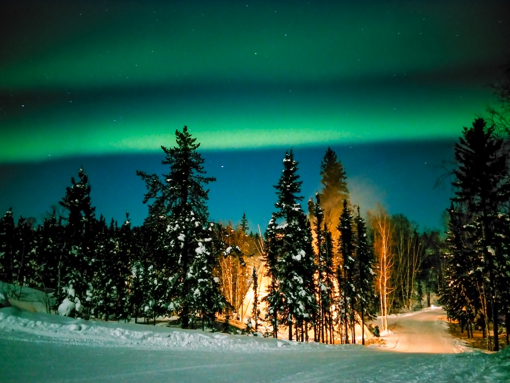
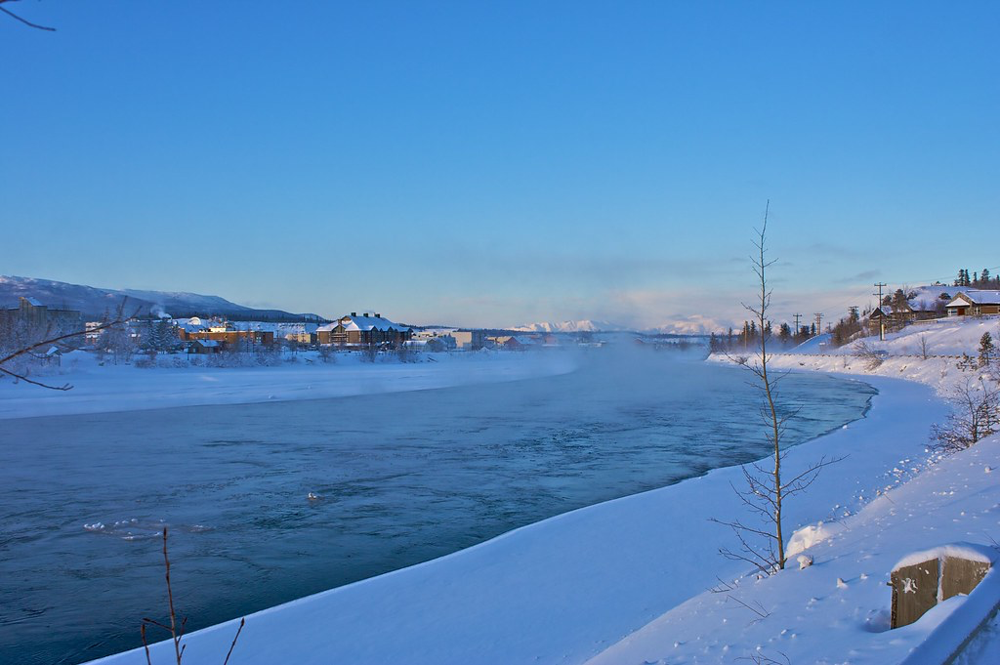
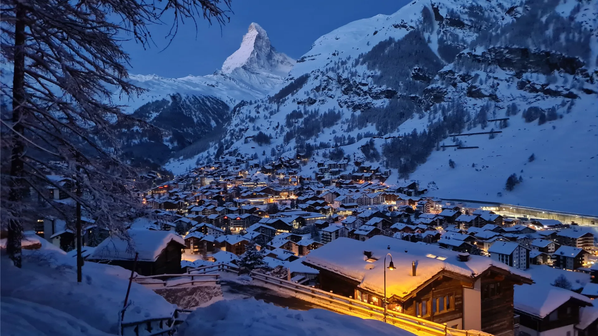
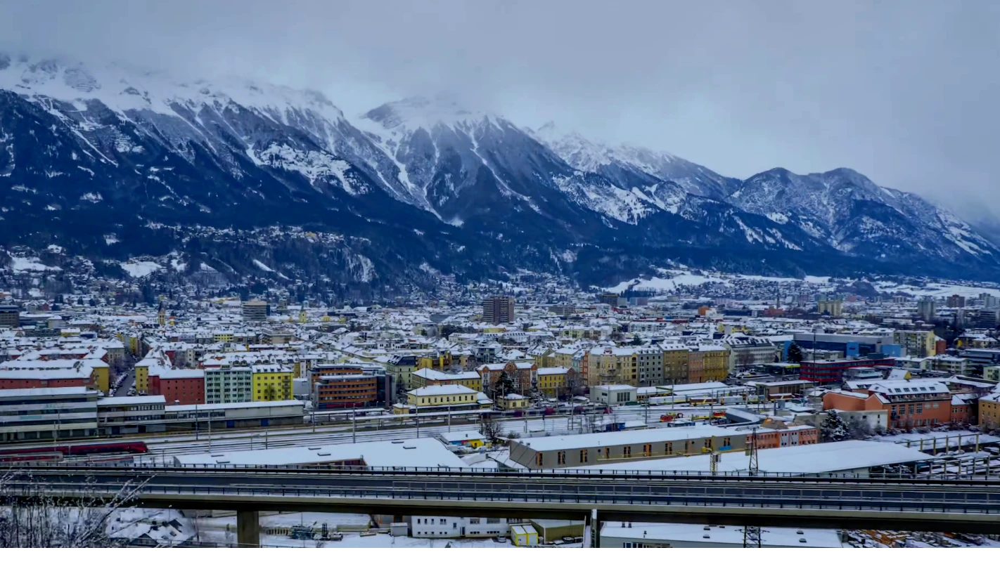
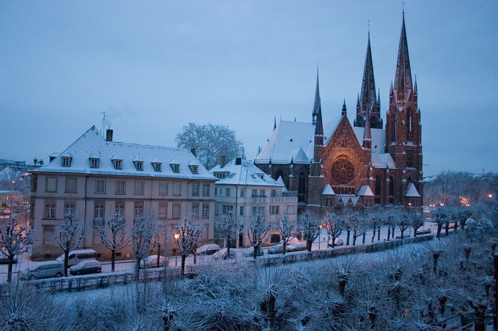
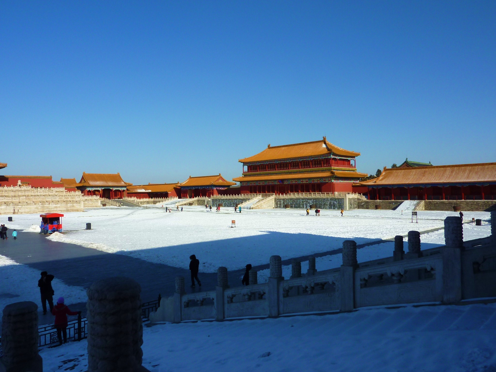

Seasons
Seasons remind us that life is ever-changing—spring brings hope, summer joy, autumn reflection, and winter rest. In their rhythm, we find growth and beauty.

Tromsø is a vibrant Arctic city located above the Arctic Circle, surrounded by dramatic mountains and deep fjords. It is widely considered one of the best places in the world to see the Northern Lights due to its location and frequent clear skies. Despite its remote setting, the city has a lively cultural scene with museums, restaurants, and winter activities that attract travelers from around the globe.
🎯 Things to do:
- Chase the Northern Lights
- Dog sledding
- Fjord tours
- Arctic Cathedral
- Cable car views
- Snowmobiling

Lofoten Islands
📍 Northern Norway
🌤️ Best Months: December – March
Dramatic snow-covered peaks rising from the sea under glowing auroras.
Lofoten is known for colorful fishing villages, rugged mountains, and incredible winter photography opportunities.
🎯 Things to do:
- Aurora viewing
- Photograph
- Visit fishing villages
- Kayaking (weather permitting)
- Hiking viewpoints
- scenic drives

Reykjavik
📍 Iceland
🌤️ Best Months: October – March
Iceland’s capital and a perfect base for chasing the Northern Lights.
From Reykjavik visitors can explore waterfalls, glaciers, volcanoes, and geothermal lagoons like the Blue Lagoon.
🎯 Things to do:
- Blue Lagoon
- Northern Lights
- Golden Circle
- city views
- glacier tours
- museums

Lapland
📍 Finland
🌤️ Best Months: December – March
A magical winter wonderland with snow forests and reindeer.
Lapland is famous for Santa Claus Village, snowmobiles, husky sledding, and glass igloo hotels for aurora viewing.
🎯 Things to do:
- Reindeer sledding
- Santa Village
- snowmobiles
- auroras
- husky rides
- igloos

Rovaniemi
📍 Finland
🌤️ Best Months: December – March
The official hometown of Santa Claus in snowy Lapland.
Visitors cross the Arctic Circle here and enjoy winter safaris and northern lights viewing.
🎯 Things to do:
- Meet Santa
- Arctic Circle
- auroras
- husky safaris
- snow activities

Abisko
📍 Sweden
🌤️ Best Months: December – March
One of the clearest skies in the world for Northern Lights viewing.
Abisko National Park has very low cloud cover, making it a top aurora destination..
🎯 Things to do:
- Aurora station
- skiing
- snowshoeing
- photography
- hiking

Fairbanks
📍 Alaska, USA
🌤️ Best Months: September – March
A remote Arctic city famous for vivid aurora displays.
Visitors can relax in hot springs while watching the Northern Lights.
🎯 Things to do:
- Northern Lights
- hot springs
- dog sledding
- ice fishing
- snow tours

Yellowknife
📍 Northwest Territories, Canada
🌤️ Best Months: November – April
One of the most reliable places to see auroras in the world.
The area’s dry climate produces extremely clear skies.
🎯 Things to do:
- Aurora tours
- snowmobiling
- ice roads
- cultural tours
- winter camping

Yukon
📍 Canada
🌤️ Best Months: November – March
A wild Arctic landscape perfect for winter adventures and auroras.
Yukon offers dog sledding, snowshoeing, and remote wilderness experiences.
🎯 Things to do:
- Dog sledding
- auroras
- snowshoeing
- wildlife spotting
- winter hiking

Svalbard
📍 Norway (Arctic Ocean)
🌤️ Best Months: December – February
A remote polar archipelago with glaciers and Arctic wildlife.
Visitors may see polar bears, frozen fjords, and the magical polar night.
🎯 Things to do:
- Snowmobiling
- glacier tours
- wildlife viewing
- polar night
- expeditions
⛷️ Winter Mountain & Ski Destinations

Zermatt
📍 Switzerland
🌤️ Best Months: December – March
A charming alpine village beneath the famous Matterhorn peak.
Zermatt is one of Europe’s top ski resorts with breathtaking mountain scenery.
🎯 Things to do:
- Skiing
- train rides
- village walks
- cable cars
- mountain views

St. Moritz
📍 Switzerland
🌤️ Best Months: December – March
A luxurious winter resort known for skiing and frozen lakes.
St. Moritz is a world-renowned destination for winter sports and luxury. The resort hosted the Winter Olympics twice and attracts visitors from around the world.
🎯 Things to do:
- Skiing
- ice skating
- shopping
- winter events
- dining

Chamonix
📍 France
🌤️ Best Months: December – March
A legendary alpine town beneath Mont Blanc.
Chamonix is a popular destination for skiing, mountaineering, and other winter sports.
🎯 Things to do:
- Skiing
- dining
- glaciers
- hiking
- mountaineering

Innsbruck
📍 Austria
🌤️ Best Months: December – February
A historic alpine city surrounded by snowy mountains.
Innsbruck hosted the Winter Olympics and combines culture with skiing.
🎯 Things to do:
- Skiing
- old town
- museums
- cable cars
- scenic views

Cortina d’Ampezzo
📍 Italy
🌤️ Best Months: December – March
A stylish ski town in the dramatic Dolomite mountains.
Famous for luxury resorts, beautiful peaks, and winter sports.
🎯 Things to do:
- Skiing
- hiking
- photography
- dining
- mountain views

Banff
📍 Alberta, Canada
🌤️ Best Months: December – March
A winter paradise with frozen lakes and snowy forests.
Banff National Park offers skiing, wildlife viewing, and stunning mountain views.
🎯 Things to do:
- Skiing
- ice skating
- hot springs
- gondola rides
- snowshoeing

Aspen
📍 Colorado, USA
🌤️ Best Months: December – March
A famous ski resort town known for luxury and powder snow.
Aspen attracts celebrities and winter sports enthusiasts.
🎯 Things to do:
- Skiing
- shopping
- nightlife
- dining
- winter sports

Lake Tahoe
📍 California/Nevada, USA
🌤️ Best Months: December – March
A beautiful alpine lake surrounded by snowy mountains.
Tahoe offers skiing, snowboarding, and scenic winter landscapes.
🎯 Things to do:
- Skiing
- snowboarding
- lake views
- hiking
- scenic drives

Niseko
📍 Hokkaido, Japan
🌤️ Best Months: December – February
One of the best places in the world for deep powder snow.
Skiers come from around the globe to experience Niseko’s famous snowfall.
🎯 Things to do:
- Skiing
- snowboarding
- onsens
- nightlife
- snow activities

Hakuba
📍 Japan
🌤️ Best Months: December – March
A mountain valley with excellent skiing and alpine views.
Hakuba hosted events during the 1998 Winter Olympics.
🎯 Things to do:
- Skiing
- snowboarding
- onsens
- hiking
- mountain views
🎄 Winter Cities & Christmas Markets

Vienna
📍 Austria
🌤️ Best Months: November – December
A city of imperial palaces and festive Christmas markets.
Vienna’s markets offer handcrafted gifts, mulled wine, and holiday cheer.
🎯 Things to do:
- Christmas markets
- museums
- concerts
- cafés
- palaces

Prague
📍 Czech Republic
🌤️ Best Months: December – February
A fairytale city with snowy castles and festive markets.
Prague’s Old Town Square transforms into a magical winter scene.
🎯 Things to do:
- Castle
- bridge
- markets
- old town
- river walks

Salzburg
📍 Austria
🌤️ Best Months: December – February
A charming alpine city with historic streets and winter charm.
Salzburg’s historic center is a UNESCO World Heritage site. The birthplace of Mozart and the setting for The Sound of Music.
🎯 Things to do:
- Old town
- markets
- fortress
- museums
- views

Strasbourg
📍 France
🌤️ Best Months: December
Known as the “Capital of Christmas.”
Strasbourg’s Christmas market is one of the oldest and most famous in Europe. Its market dates back to the 16th century.
🎯 Things to do:
- Markets
- cathedral
- canals
- lights
- walking tours

Munich
📍 Germany
🌤️ Best Months: December
Traditional Bavarian markets and festive atmosphere.
Visitors enjoy warm drinks and handcrafted decorations.
🎯 Things to do:
- Markets
- beer halls
- museums
- parks
- shopping

Cologne
📍 Cologne
🌤️ Best Months: December
Famous Christmas markets beside a towering cathedral.
Cologne’s Christmas market is one of the largest in Europe, featuring traditional crafts and mulled wine. Millions visit each year during the holiday season.
🎯 Things to do:
- Cathedral
- markets
- river walks
- shopping
- food

Budapest
📍 Hungary
🌤️ Best Months: December – February
A winter city famous for thermal baths and festive markets.
Snowy views along the Danube River make winter magical.
🎯 Things to do:
- Baths
- markets
- castles
- river cruise
- viewpoints

Tallinn
📍 Estonia
🌤️ Best Months: December – February
A medieval town covered in snow during winter.
Tallinn’s Christmas market is one of Europe’s oldest.
🎯 Things to do:
- Old town
- markets
- towers
- cafés
- walking tours

Copenhagen
📍 Denmark
🌤️ Best Months: December
Cozy winter atmosphere and festive lights. Tivoli Gardens becomes a magical Christmas park.
🎯 Things to do:
- Tivoli Gardens
- markets
- cafés
- cycling
- shopping

Quebec City
📍 Canada
🌤️ Best Months: December – February
A snowy European-style city in North America.
The Winter Carnival is one of the world’s largest winter festivals.
🎯 Things to do:
- Winter Carnival
- old town
- snow activities
- dining
Cities

Seoul
📍 South Korea
🌤️ Best Months: December – February
A modern city mixed with traditional culture, especially beautiful in winter.
🎯 Things to do:
- Palaces
- street food
- ice skating
- markets
- villages

Tokyo
📍 Japan
🌤️ Best Months: December – February
A vibrant city with winter lights, culture, and clear skies.
🎯 Things to do:
- Illuminations
- temples
- shopping
- food
- day trips

New York City
📍 United States
🌤️ Best Months: December – February
A famous city that becomes magical with snow and holiday lights.
🎯 Things to do:
- Ice skating
- Central Park
- Broadway
- shopping
- landmarks

London
📍 United Kingdom
🌤️ Best Months: December – February
A historic city with festive lights and winter attractions.
🎯 Things to do:
- Markets
- museums
- landmarks
- parks
- attractions

Paris
📍 France
🌤️ Best Months: December – February
A romantic city with fewer crowds and cozy winter atmosphere.
🎯 Things to do:
- Eiffel Tower
- museums
- cafés
- river walks
- shopping

Rome
📍 Italy
🌤️ Best Months: December – February
A historic city with mild winters and fewer tourists.
🎯 Things to do:
- Colosseum
- Vatican
- ruins
- food
- walking tours

Istanbul
📍 Turkey
🌤️ Best Months: December – February
A unique city between Europe and Asia with rich culture.
🎯 Things to do:
- Mosques
- markets
- cruises
- history
- food

Beijing
📍 China
🌤️ Best Months: December – February
The capital of China, known for its rich history and cultural landmarks. A historic capital with cold, clear winter weather.
🎯 Things to do:
- Great Wall
- Forbidden City
- temples
- food
- tours

Moscow
📍 Russia
🌤️ Best Months: December – February
A snowy city with grand architecture and winter beauty.
🎯 Things to do:
- Red Square
- skating
- museums
- landmarks
- tours

Berlin
📍 Germany
🌤️ Best Months: December – February
A vibrant city with culture, history, and winter markets.
🎯 Things to do:
- Museums
- markets
- history sites
- nightlife
- tours

Marrakech
📍 Morocco, Africa
🌤️ Best Months: December – February
Marrakech is a vibrant city filled with colorful markets, historic palaces, and desert surroundings. Winter brings mild temperatures, making it ideal for exploring without extreme heat.
🎯 Things to do:
- Markets
- Palaces
- desert trips
- gardens
- mosques
- food tours

Cairo
📍 Egypt, Africa
🌤️ Best Months: December – February
Cairo offers cooler weather in winter, perfect for exploring ancient history and bustling city life along the Nile.
🎯 Things to do:
- Pyramids
- Museums
- Nile cruise
- bazaars
- mosques
- city tours

Cape Town
📍 South Africa, Africa
🌤️ Best Months: December – February
Cape Town offers a unique blend of natural beauty and cultural experiences, making it a great destination even in winter.Cape Town is a coastal city with mountains, beaches, and vineyards, offering warm weather during the northern winter.
🎯 Things to do:
- Table Mountain
- beaches
- vineyards
- hiking
- harbor
- tours

Johannesburg
📍 South Africa, Africa
🌤️ Best Months: December – February
A major African city known for its history, culture, and access to wildlife experiences.
🎯 Things to do:
- Museums
- city tours
- safaris
- markets
- culture
- food

Nairobi
📍 Kenya, Africa
🌤️ Best Months: December – February
Nairobi blends modern city life with nearby wildlife reserves and natural beauty.
🎯 Things to do:
- Safari park
- giraffe center
- museums
- markets
- tours
- food
Zanzibar City
📍 Tanzania, Africa
🌤️ Best Months: December – February
A historic island city with beaches, spice culture, and rich history.
🎯 Things to do:
- Stone Town
- beaches
- spice tours
- markets
- snorkeling
- history
Accra
📍 Ghana, Africa
🌤️ Best Months: December – February
A lively coastal capital with culture, beaches, and music scenes.
🎯 Things to do:
- Beaches
- markets
- museums
- nightlife
- tours
- food
Dakar
📍 Senegal, Africa
🌤️ Best Months: December – February
A coastal city known for music, art, and Atlantic views.
🎯 Things to do:
- Museums
- Beaches
- islands
- markets
- culture
- tours
Addis Ababa
📍 Ethiopia, Africa
🌤️ Best Months: December – February
A high-altitude capital rich in history and culture.
🎯 Things to do:
- Museums
- churches
- markets
- food
- history
- tours
Windhoek
📍 Namibia, Africa
🌤️ Best Months: December – February
A peaceful city surrounded by desert landscapes and wildlife areas.
🎯 Things to do:
- Safaris
- nature
- hiking
- markets
- museums
- tours
Casablanca
📍 Morocco, Africa
🌤️ Best Months: December – February
A modern coastal city with historic influences and ocean views.
🎯 Things to do:
- Mosque
- beaches
- markets
- dining
- tours
- city walks
Tunis
📍 Tunisia, Africa
🌤️ Best Months: December – February
A historic Mediterranean city with ancient ruins and markets.
🎯 Things to do:
- Medina
- ruins
- museums
- markets
- tours
- food
Algiers
📍 Algeria, Africa
🌤️ Best Months: December – February
A white-washed coastal city with Ottoman and French influences.
🎯 Things to do:
- Casbah
- coastline
- museums
- history
- walking tours
Kigali
📍 Rwanda, Africa
🌤️ Best Months: December – February
A clean and modern city surrounded by green hills.
🎯 Things to do:
- Museums
- markets
- culture
- food
- tours
- nature
Gaborone
📍 Botswana, Africa
🌤️ Best Months: December – February
A quiet capital with access to wildlife and nature reserves.
🎯 Things to do:
- Museums
- markets
- hiking
- Reserves
- tours
- nature
Maputo
📍 Mozambique, Africa
🌤️ Best Months: December – February
A coastal city with Portuguese influence and vibrant culture.
🎯 Things to do:
- Beaches
- markets
- architecture
- food
- tours
- culture
Kampala
📍 Uganda, Africa
🌤️ Best Months: December – February
A lively city built across hills with lakes nearby.
🎯 Things to do:
- lake trips
- Markets
- culture
- food
- tours
- nightlife
Fes
📍 Morocco, Africa
🌤️ Best Months: December – February
A historic city known for its ancient medina and traditions.
🎯 Things to do:
- Medina
- markets
- tanneries
- food
- tours
- mosques
Luxor
📍 Egypt, Africa
🌤️ Best Months: December – February
An open-air museum filled with ancient temples and tombs.
🎯 Things to do:
- Temples
- tombs
- Nile cruise
- history
- tours
- sunrise views
Arusha
📍 Tanzania, Africa
🌤️ Best Months: December – February
A gateway city to famous African safaris and Mount Kilimanjaro.
🎯 Things to do:
- Safaris
- markets
- nature
- hiking
- tours
- culture
Victoria Falls
📍 Zambia/Zimbabwe, Africa
🌤️ Best Months: December – February
A breathtaking waterfall on the Zambezi River, straddling the border between Zambia and Zimbabwe. One of the largest waterfalls in the world, creating a powerful and misty landscape.
🎯 Things to do:
- Viewing points
- helicopter rides
- rafting
- walking trails
- photography
- river cruises
Sahara Desert
📍 Mauritania, Africa
🌤️ Best Months: December – February
The largest hot desert in the world, known for its vast sand dunes and unique ecosystem. The world’s largest hot desert with endless sand dunes and dramatic landscapes.
🎯 Things to do:
- Camel rides
- desert camps
- stargazing
- dune walks
- photography
- tours